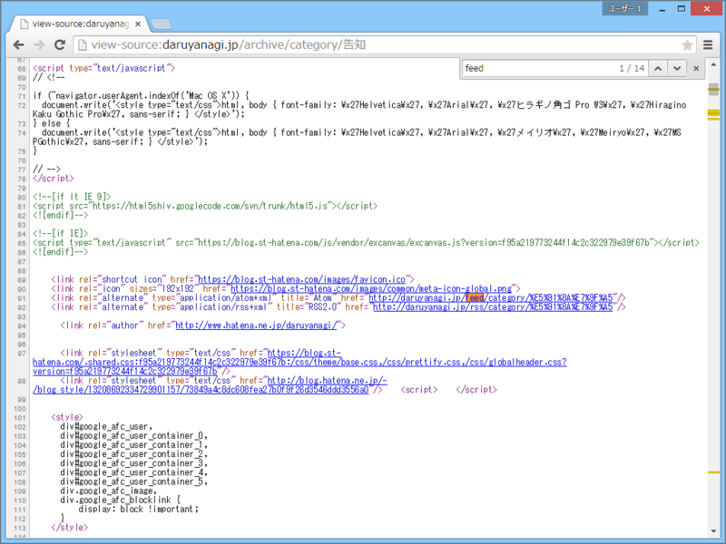
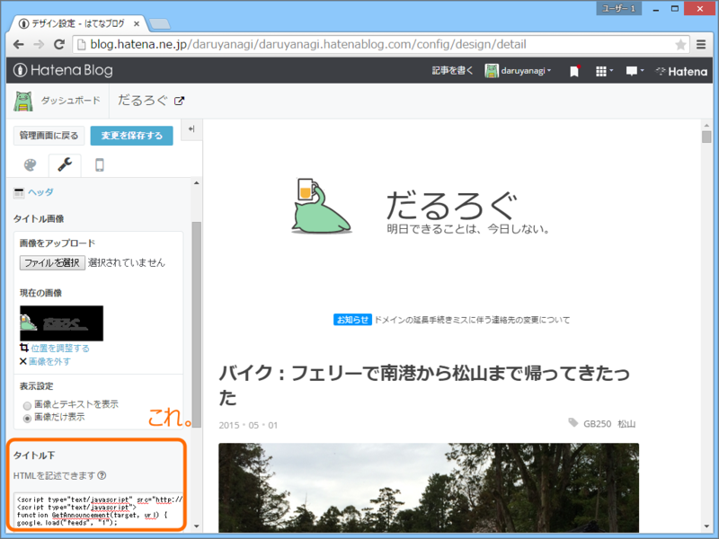

はてなダイアリーで特定カテゴリーの記事をお知らせとしてトップに掲出する方法を考えてみた。
公開日：

これな。ドメイン失くしてごめんなさい的な告知を出しておきたかった。
カテゴリーのフィードを探す。
まずはカテゴリーのフィードを探す。カテゴリーページを開いてソースを見ると……

こんな風に書いてある。
<link rel="alternate" type="application/atom+xml" title="Atom" href="https://blog.daruyanagi.jp/feed/category/%E5%91%8A%E7%9F%A5"/> <link rel="alternate" type="application/rss+xml" title="RSS2.0" href="https://blog.daruyanagi.jp/rss/category/%E5%91%8A%E7%9F%A5"/>
なんでもいいと思うのだけど、今回は RSS2.0 の方を使った。
JavaScript でフィードを取得して主力する
Google Feed API を利用するのが一般的な方法らしい。
最初の1個だけ取得して、#target 要素を書き換えるようにしてみる。
<script type="text/javascript" src="http://www.google.com/jsapi"></script> <script type="text/javascript"> function GetAnnouncement(target, url) { google.load("feeds", "1");function initialize() { var feed = new google.feeds.Feed(url); feed.setNumEntries(1); feed.load(function (result) { if (!result.error) { var container = document.getElementById(target); var feed = result.feed.entries[0]; var html = "<a href=’" + feed.link + "'>" + feed.title + "</a>"; container.innerHTML = html; } else { console.log(result.error.code + ":" + result.error.message); } }); }
google.setOnLoadCallback(initialize); }
GetAnnouncement("feed", "https://blog.daruyanagi.jp/rss/category/%E5%91%8A%E7%9F%A5"); </script>
<span id="feed">ここにはいる</span>
JavaScript 力が低い（
ついでにスタイルシートとかもかいて、装飾しておくとよいかと。ソースコードの見た目？ んなもん気にしない。
キャッシュが効いていて更新が遅いので、気になる人は URL の尻尾になんかランダムの値を足しておくといいかも。毎回フィードをとりに行くので、表示は遅くなるが。
はてなのトップに掲出する

デザイン設定画面のヘッダーのところにさっきのソースコードをペタッと貼る。あとは見栄えをチェックして完了。